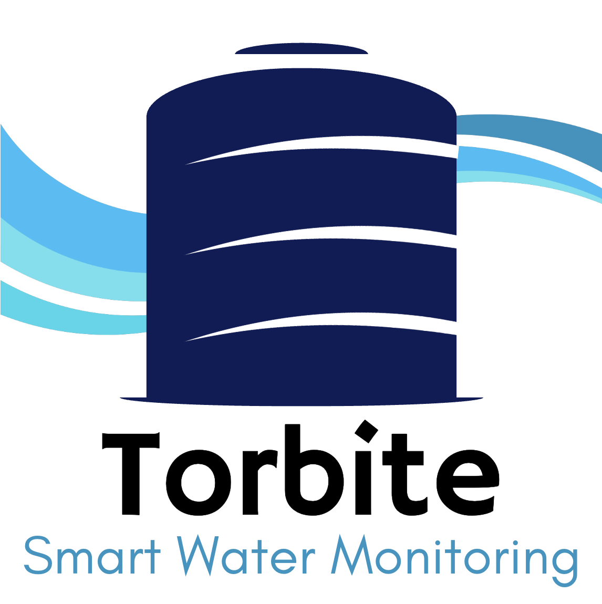

Hubungkan Perangkat
Masukan nomor seri perangkat Torbite Anda untuk memulai proses konfigurasi.
Scan kode QR pada perangkat untuk setup instan

Solusi Pemantauan Kualitas dan Level Air Secara Real-time dan Pintar
Lupa Kata Sandi?
Belum punya akun? Buat Akun Baru
Masukan nomor seri perangkat Torbite Anda untuk memulai proses konfigurasi.
Scan kode QR pada perangkat untuk setup instan
Masukkan 4 digit kode OTP yang dikirimkan ke email use***@email.com untuk verifikasi perangkat TRB-001.
Tidak menerima kode? Kirim Ulang (30s)
Dashboard Monitoring
Tandon Utama (TRB-001)
Perangkat: Torbite_01
Mode Otomatis Aktif
Pompa berjalan otomatis berdasarkan level air.
Status Pompa
Mati
Mode: Manual
Detail Monitoring
Lihat statistik penggunaan air
Detail Penggunaan
Pemakaian Bulan Ini
Riwayat 6 Bulan Terakhir
Tren Penggunaan Harian
Batas Ideal Bulan Ini
15.000 liter
Sisa Aman
6.550 L
Level air di Tandon Utama berada di bawah ambang batas (20%).
3 Menit yang lalu • Torbite_01
Perangkat Torbite_01 telah terhubung dan siap digunakan.
2 Jam yang lalu • Sistem
Level air di Tandon Utama (TRB-001) berada di bawah ambang batas (20%). Segera lakukan tindakan.
username@email.com
Cari jawaban dari pertanyaan Anda di bawah ini atau hubungi tim dukungan.
Buka menu 'Setup Perangkat', masukkan nomor seri dan nama perangkat, lalu ikuti langkah verifikasi OTP.
Segera periksa ketersediaan air Anda. Nyalakan pompa air secara manual melalui Dashboard.